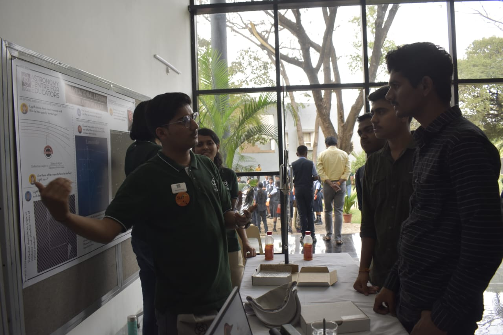
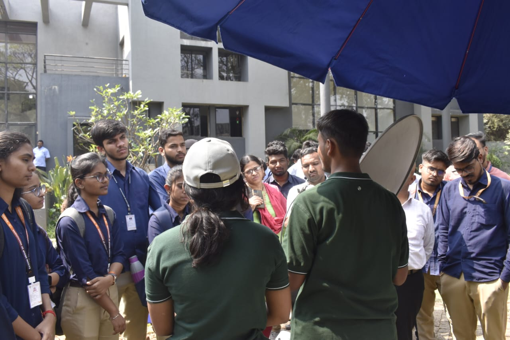

-
NASA‘s PACE launch
8th February 2024
On 8th Feb 2024 the PACE satellite was launched by NASA through Space- X Falcon -9 spacecraft from Cape Canaveral Space Force Station's Space Launch Complex 40 in Florida. PACE stands for Plankton Aerosol Cloud Ocean Ecosystem. The main objective of the event is to study the health of Earth's climate and ocean. The mission also aims at studying the exchange of carbon dioxide between oceans and atmosphere. PACE is an orbiter that has devices to monitor the oceans on the basis of the colour helps to understand the microbiology flourishing beneath the oceans. It has two more payloads one of them is the HARP-2 that stands for Hyper Angle Rainbow Polarimeter to study the cloud bows and predetermine the size of the droplets of the showers. And the SPEX-1 the spectral polarimeter generally used for planetary explorations while in this mission its objective is to explore Earth predominantly.

A SpaceX Falcon 9 rocket carrying NASA’s PACE. Credit: nasa.gov
References
NASA. "PACE." [ nasa.gov]
-
IM-1 Odysseus Satellite launch
15th February, 2024
The United States accomplished its first ever commercial lunar mission with Intuitive Machines successfully launching the Nova C Lander also known as Odysseus through a Falcon 9 Space-X space craft.the launch was scheduled on 15th February 2024 from the Kennedy Space Centre.The mission achieved a successful landing on 22nd of Feb 2024 on the south pole of the moon within a 1 kilometer diameter of the Malapert Crater. The Nova -C lunar lander is the first one to utilize methane and oxygen as liquid propellants to fuel the mission. The lander stands about 4 metres in length and 1.57 metres wide weighing around 1908 kilograms.It carries 5 different payloads for different purposes.The NASA payload includes the Laser Retro-Reflector Array (LRA), Navigation Doppler Lidar for Precise Velocity and Range Sensing (NDL), Lunar Node 1 Navigation Demonstrator (LN-1), Stereo Cameras for Lunar Plume-Surface Studies (SCALPSS), and Radio wave Observation at the Lunar Surface of the photoElectron Sheath (ROLSES).
-
National Science Day Celebration at IUCAA
28th February, 2024
The Inter-University Centre for Astronomy and Astrophysics (IUCAA) celebrates National Science Day every year on February 28th honoring the legacy of Sir C.V. Raman on his birth anniversary.. The organization holds a science exhibition demonstrating various projects and innovations in the field of space sciences and even different science realms that are being worked on in India. This year the event was based on a special theme Facilities and Science of IUCAA aligning with the National theme of “Indigenous Technologies for Viksit Bharat”. Students from diverse educational backgrounds and institutions showcased experimental projects, accompanied by detailed explanations . The exhibition featured project models showcasing groundbreaking missions such as Chandrayaan-1, Chandrayaan-3, Mangalyaan, and Aditya L1, alongside scientific projects like the Horn Antennae, Affordable Small Radio Telescope, Cosmic Ray Muon Detector, Gravitational Lensing, and Faraday Rotation.The event welcomed researchers and students from around the globe, who explored the exhibition from the projects on display.
Gyanesh Choudhary explaining Gravitational Lensing, National Science Day at IUCAA. Credit: Antariksh Club
Sahil Sawant explaining ASRT, National Science Day at IUCAA. Credit: Antariksh Club
References
IUCAA NSD. "Welcome to the Annual celebration of Science in India ." [ google.com]

{kind=link}